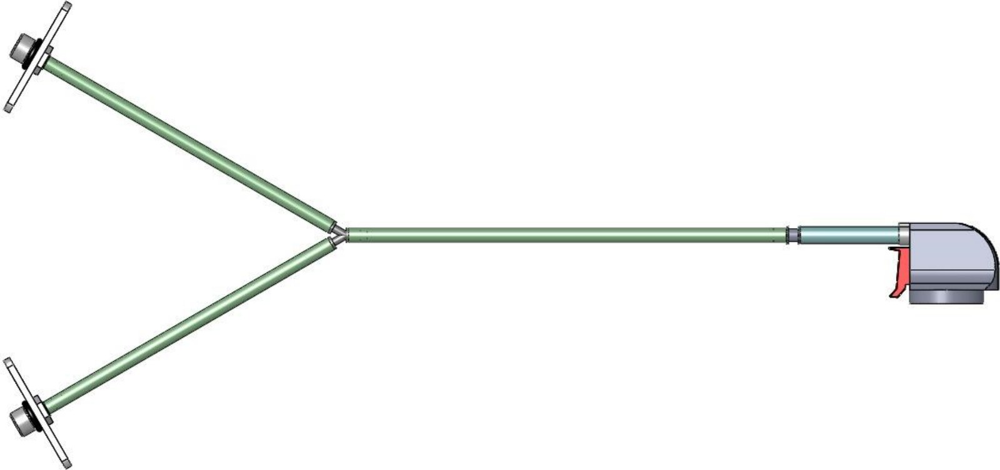

Doc no. MOC-TSB-13-27 // Vol. 13 No. 27 // Sep 26, 2013 // Fuel
Optimizer Tool for BMW Twin Turbo Engines
New75017
MOC has developed a new Foaming Intake Tool (Part No. 75017) to accommodate the use of Optimizer™ on various BMW models. While the Tool is specifically known to fit vehicles with N63 Twin Turbo engines, it may also fit other models.
What's new
This new Tool connects at the Charge Air Temperature and Pressure Sensor located on the intercoolers.
The MOC Optimizer™ product (Part No. 16501) is sold separately.
Contact
For more information, contact the Machine & Equipment Department at 866.244.6621.

Part numbers
| Part No. | Description | Notes |
|---|---|---|
| 75017 | Tool, Foaming Intake, BMW Twin Turbo | |
| 16501 | Optimizer |